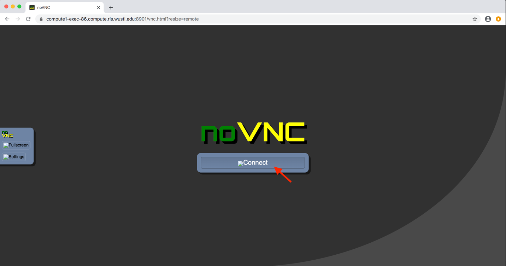
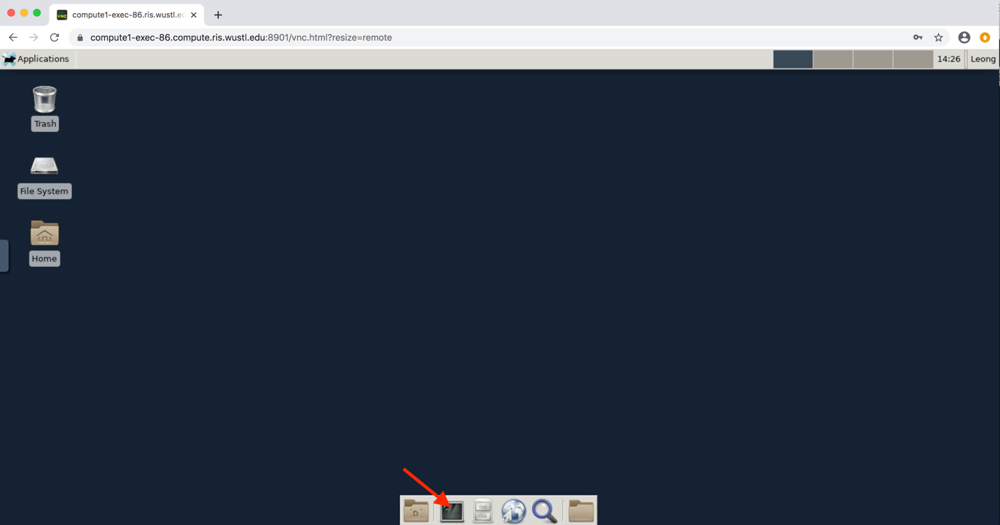

Using MATLAB¶
For help with running MATLAB on Compute1, you can contact Shin Leong.
Set up the MATLAB license¶
Prerequisite for using MATLAB is to setup the MATLAB license. Shown below is the step that must be taken to setup the license for MATLAB. You only need to set it up one time.
SSH in to Compute1:
$ ssh wustlkey@compute1-client-1.ris.wustl.edu
Modify LSF_DOCKER_VOLUMES in ~/lsf-conf.rc. Recall LSF_DOCKER_VOLUMES is
a space-separated list of path1:path2 pairs, specifying directories on Storage1 that are
mounted in your container: path1 the directory on Storage1 and
path2 is where it is mounted in your container. You need to add the following
path1:path2 pair to LSF_DOCKER_VOLUMES in
~/lsf-conf.rc:
/storage1/fs1/rvmartin/Active/tools/matlab-2019a/licenses:$HOME/.matlab/R2019b_licenses
Add the following line to the end of your ~/.bashrc file to make sure you have
/usr/local/bin in your PATH:
export PATH=$PATH:/usr/local/bin
Running MATLAB interactively in terminal¶
Shown below is the quick-start guide to start MATLAB in a terminal.
SSH in to Compute1:
$ ssh wustlkey@compute1-client-1.ris.wustl.edu
Get a compute exec node terminal:
[wustlkey@compute1-client-1 ~]$ compute1-terminal /bin/bash
Note
You might need to specify -G option if you are belonging to multiple compute groups.
Note
You can specify -M and -R option to request x GB of memory. For example, to
request for 64GB, compute1-terminal -M 64GB -R 'rusage[mem=64GB]' /bin/bash
Use software modules to load the environment for running MATLAB
[wustlkey@compute1-exec-123 ~]$ module avail matlab
-------------- /act/modulefiles -------------------------------
matlab matlab_R2019b
The matlab module is a short-cut to the latest version. If you wanted to use a specific version, you’ll do:
[wustlkey@compute1-exec-123 ~]$ module load matlab_R2019b
You can then run the matlab command directly:
[wustlkey@compute1-exec-123 ~]$ matlab
MATLAB is selecting SOFTWARE OPENGL rendering.
Running MATLAB interactively in noVNC session¶
Shown below is the quick-start guide to start MATLAB in a noVNC session.
SSH in to Compute1:
$ ssh wustlkey@compute1-client-1.ris.wustl.edu
Get a noVNC session. You will get the output similar to the following if this is your firsttime using noVNC. It will generate a random password for you indicated by line with “Your password for noVNC is:”.
[wustlkey@compute1-client-1 ~]$ compute1-gui-desktop
Created password for your noVNC web login.
Your password for noVNC is: PRhtO6O2PwM=
Please use the password below to login to the noVNC session.
If you want to pick your own password, you can simply set the
environment variable VNC_PW with you own password.
Job <627984> is submitted to queue <general-interactive>.
You can access your compute1 desktop with the URL https://compute1-exec-86.compute.ris.wustl.edu:8901/vnc.html?resize=remote
Note
You might need to specify -G option if you are belonging to multiple compute groups.
Note
You can specify -n option to request x number of processes. For example, to request for 16 CPU, compute1-gui-desktop -n 16 /bin/bash
Note
You can specify -M and -R option to request x GB of memory. For example, to
request for 64GB, compute1-terminal -M 64GB -R 'rusage[mem=64GB]' /bin/bash
Note
The password and URL above are only for illustration only. You might get different password and URL.
Note
You can prepend to the command “compute-gui-desktop” with VNC_PW=<put your password here> to set your own password for noVNC. Please replace “<put your password here>” with your custom password.
Open a browser and copy-and-paste the URL from the step #2 above. The URL is at the line with the wording “You can access your compute1 desktop with the URL”.
Note
It might have some delay to setup the noVNC session at the compute execution node. Normally, it will take less than 30 seconds. If it is not presenting the noVNC session page after a minute, please put in a ticket to RIS service desk: Open a Ticket.
Login to the noVNC session from the noVNC session page. Please click on the “Connect” button indicated by the red arrow. Then, please put in the password from step#2
{kind=link}
Get a noVNC session terminal by clicking on the terminal icon as indicated by the red arrow as shown below
{kind=link}
Use software modules to load the environment for running MATLAB.
[wustlkey@compute1-exec-123 ~]$ module avail matlab
-------------- /act/modulefiles -------------------------------
matlab matlab_R2019b
The matlab module is a short-cut to the latest version. If you wanted to use a specific version, you’ll do:
[wustlkey@compute1-exec-123 ~]$ module load matlab_R2019b
You can then run the matlab command directly:
[wustlkey@compute1-exec-123 ~]$ matlab
MATLAB is selecting SOFTWARE OPENGL rendering.